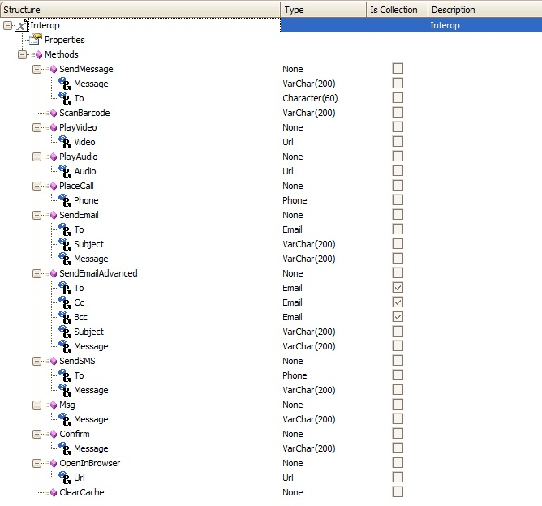
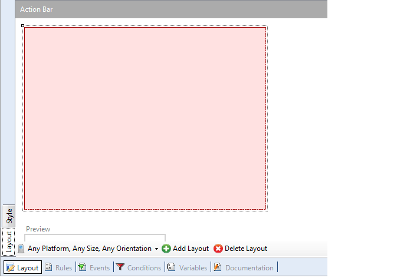
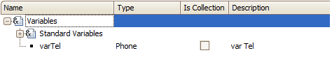
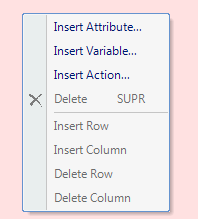
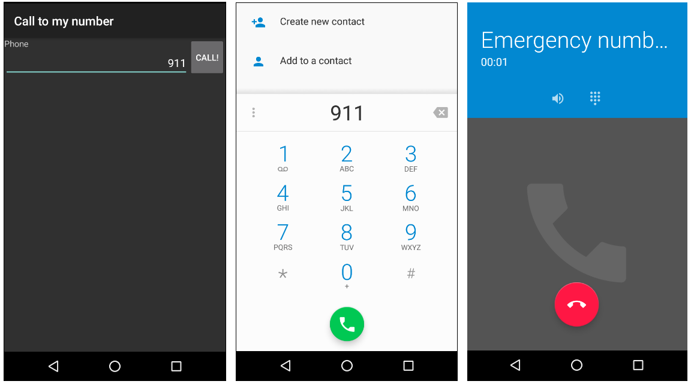

The Interop External Object which can be found under the Smart Devices API folder, provides several methods to interact with the device where the app is executing.  The PlaceCall method enables you to have an action that can make a call if the app is running on a device which has that feature. This action receives a paramater based on the Phone domain. The value of the parameter that is passed is the number where to call. This article will show an example of how this feature is used. First, create a new Panel object:  Add a variable based on the Phone domain to the Work With for Smart Devices object, this variable will be entered by the user with the phone number to call.  Add the variable to the Section General (right click/Insert Variable), Edit Mode Layout. Add a new Action to the Layout (right click/Insert Action)  Note: Make sure the variable has the property ReadOnly property set to False On the action's associated event add the following code:
Event 'Call!'
Interop.PlaceCall(&varTel)
EndEvent
Done! The entry panel will accept a phone number and when the Call button is tapped a call will be started! Example images ConsiderationsWhen using iOS, once the phone call ends the application is redirected to the native "phone call history" application, it does not go back to the original application. AvailabilityThis explanation is from version GeneXus X Evolution 2 U2.
|
| Backlinks |
| Interop external object |